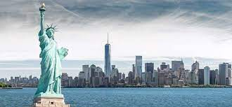
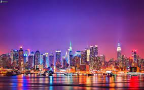

New York
New York
New York City , in inglese americano , in breve New York, in italiano anche Nuova York, è una città degli Stati Uniti d'America situata nello stato di New York.
Conosciuta nel mondo anche come "grande mela" (Big Apple), un soprannome le cui origini risalgono al libro The Wayfarer in New York scritto da Edward S. Martin nel 1909,
sorge su un'area di circa 785 km² alla foce del fiume Hudson, sull'oceano Atlantico, mentre l'area metropolitana comprende anche aree situate nei due adiacenti stati del New Jersey e del Connecticut.

È la città più popolosa degli Stati Uniti (tanto che la sua popolazione di 8,6 milioni di abitanti supera di più del doppio dei 4 milioni di Los Angeles, seconda città nazionale),
nonché uno dei centri economici più importanti del mondo, riconosciuta come città globale. L'agglomerato urbano conta 18 223 567 abitanti, quello metropolitano è di 23 019 036 abitanti, che la rendono,
secondo le stime, dalla terza alla sesta area urbana più popolata del mondo, e tra le prime tre del continente americano (assieme a Città del Messico e San Paolo).
Inoltre molti degli abitanti di New York, chiamati newyorkesi o nuovaiorchesi,provengono dall'estero, sono nati in altre zone degli Stati Uniti o sono di origine straniera,
il che la rende una delle città più cosmopolite e multietniche del mondo.
